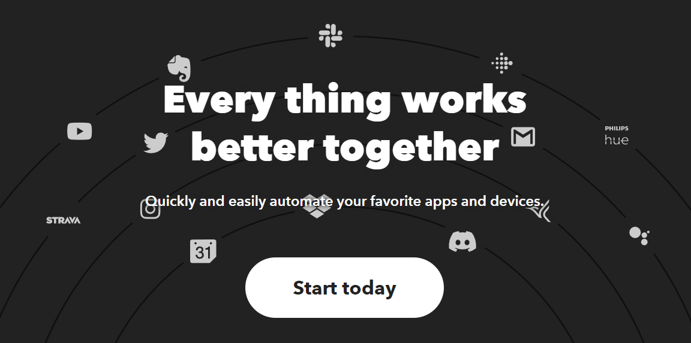
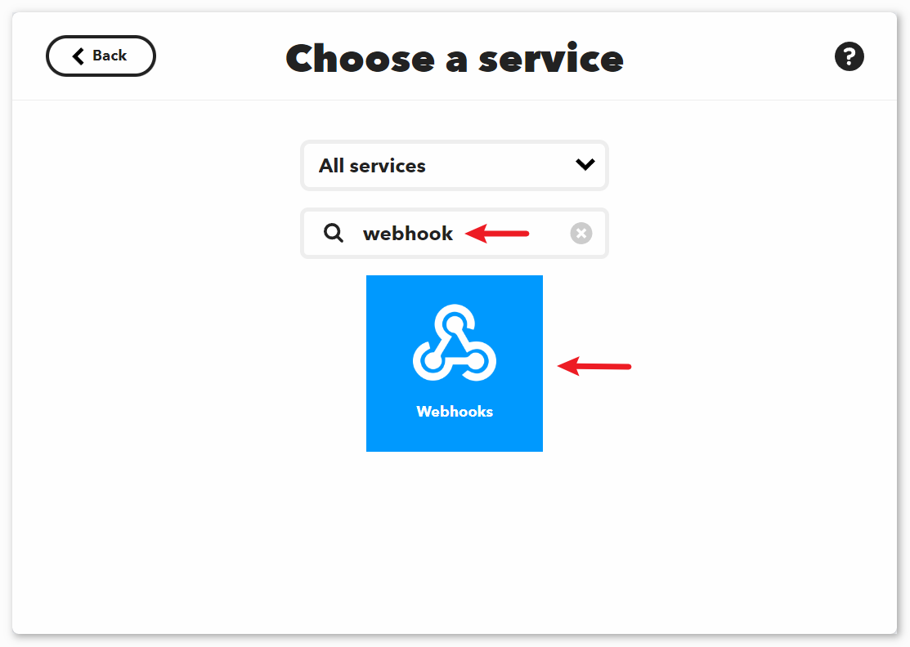
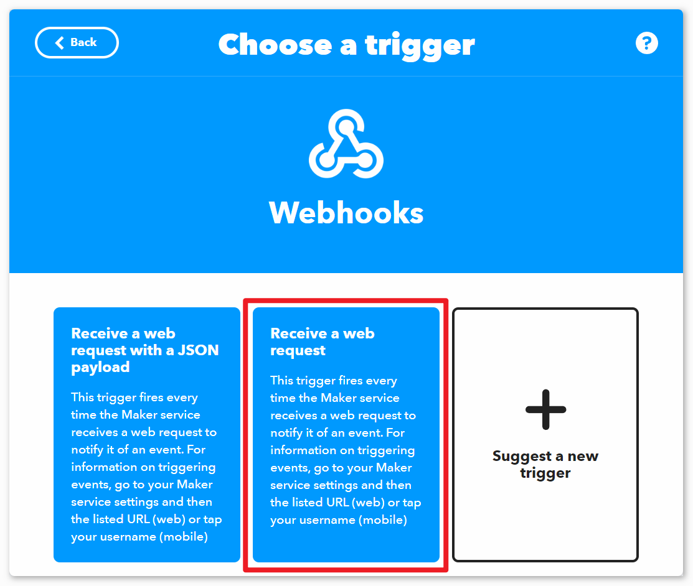
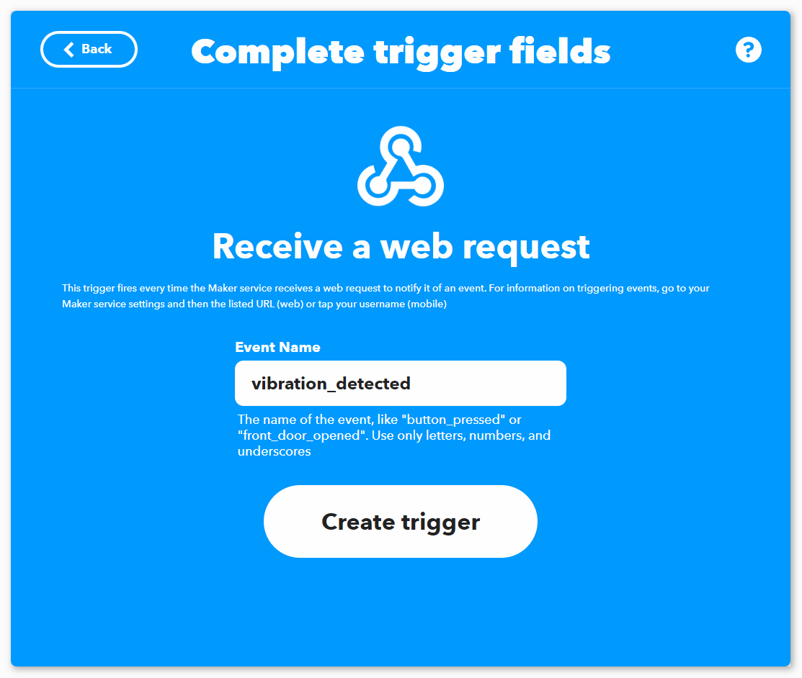
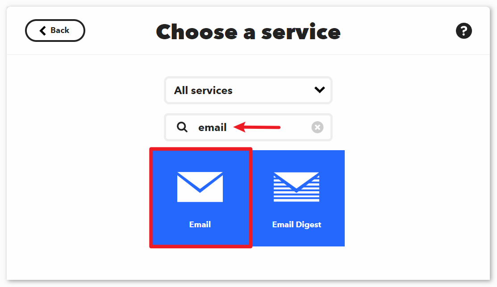
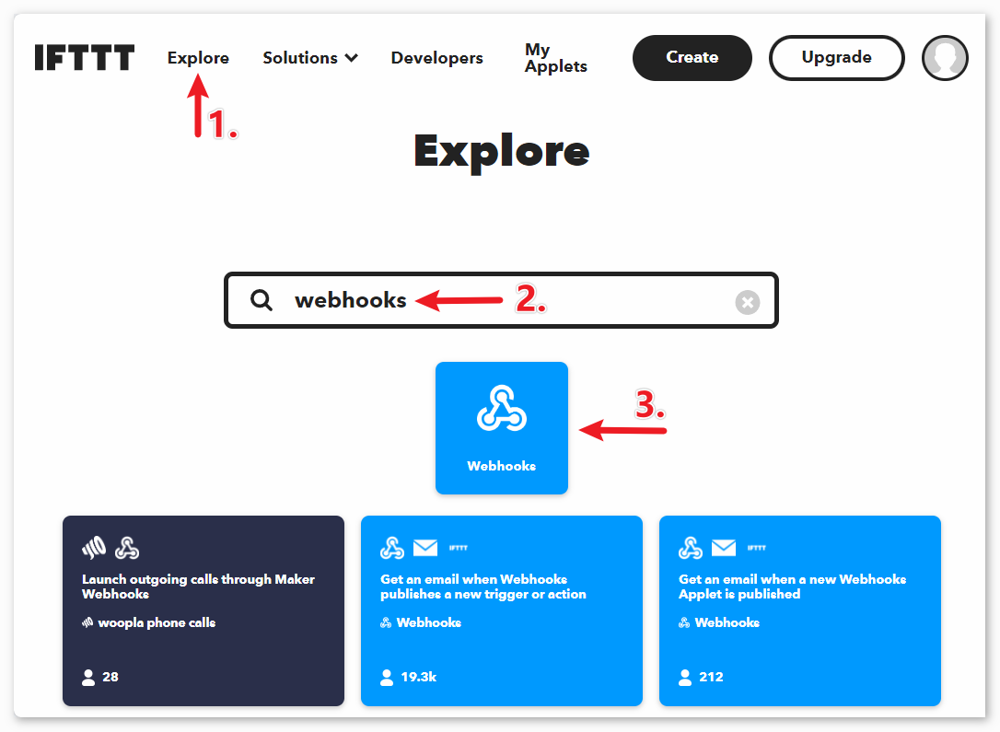
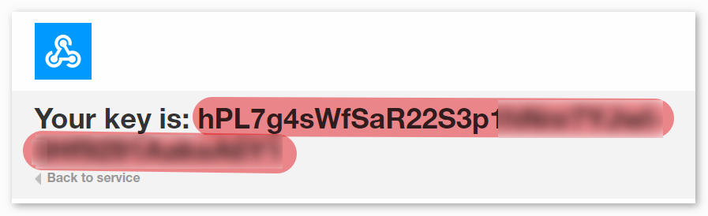

注釈
こんにちは、SunFounderのRaspberry Pi & Arduino & ESP32愛好家コミュニティへようこそ！Facebook上でRaspberry Pi、Arduino、ESP32についてもっと深く掘り下げ、他の愛好家と交流しましょう。
参加する理由は？
エキスパートサポート：コミュニティやチームの助けを借りて、販売後の問題や技術的な課題を解決します。
学び＆共有：ヒントやチュートリアルを交換してスキルを向上させましょう。
独占的なプレビュー：新製品の発表や先行プレビューに早期アクセスしましょう。
特別割引：最新製品の独占割引をお楽しみください。
祭りのプロモーションとギフト：ギフトや祝日のプロモーションに参加しましょう。
👉 私たちと一緒に探索し、創造する準備はできていますか？[ここ]をクリックして今すぐ参加しましょう！
IFTTTを使用した振動警報システム
このプロジェクトでは、Arduinoボード（Uno R4またはR3）、ESP8266モジュール、そして振動センサー（SW-420）を使用して振動検出システムを構築します。振動が検出されると、システムはIFTTTサーバーにHTTPリクエストを送信し、通知やメールの送信など、様々なアクションをトリガーすることが可能です。
短時間に過度なアラートを防ぐため、システムはHTTPリクエストを最低2分（120000ミリ秒）の間隔で送信するようにプログラムされています。この間隔は、ユーザーのニーズに応じて調整することができます。
1. 配線の構築
注釈
ESP8266モジュールは安定した動作環境を提供するために高い電流が必要ですので、9Vのバッテリーが接続されていることを確認してください。

2. IFTTTの設定
IFTTT は2011年に設立された民間の商業企業で、オンラインのデジタル自動化プラットフォームをサービスとして提供しています。このプラットフォームは、2020年時点で1800万人のユーザーに、多様なプラットフォーム間でif文を作成するための視覚的なインターフェースを提供しています。


IFTTTは「If This Then That」の略で、特定の条件が満たされた場合に別の何かが起こるという仕組みです。"if this" 部分はトリガーと呼ばれ、"then that" 部分はアクションと呼ばれます。スマートホームデバイス、ソーシャルメディア、配信アプリなどを連携させ、自動化されたタスクを実行します。

2.1 IFTTTへのサインアップ
お使いのブラウザで "https://ifttt.com" にアクセスし、ページの中央にある「Get started」ボタンをクリックしてください。アカウントを作成するために必要な情報を入力します。

「Back」をクリックしてクイックスタートを終了し、IFTTTのホームページに戻ってページを更新し、再度ログインしてください。

2.2 アプレットの作成
「Create」をクリックしてアプレットの作成を開始します。

If This トリガー
「If This」の隣にある「Add」をクリックしてトリガーを追加します。

「webhook」を検索し、「Webhooks」をクリックします。


次に表示されるページで「Receive a web request」をクリックします。


「Event Name」には「vibration_detected」と入力します。


Then That アクション
「Then That」の隣にある「Add」をクリックしてアクションを追加します。

「email」と検索し、「Email」をクリックします。


次に表示されるページで「Send me a email」をクリックします。

振動が検出されたときに送信されるメールの件名と内容を設定します。
参考として、件名は「[ESP-01] Detected vibration!!!」、内容は「Detected vibration, please confirm the situation promptly! {{OccurredAt}}」と設定されています。メールを送信する際には、 {{OccurredAt}} はイベントが発生した時刻に自動的に置き換えられます。

以下の手順に従って、アプレットの作成を完了します。


3. コードの実行
ultimate-sensor-kit\iot_project\wifi\04-Vibration_alert_systemパス内の04-Vibration_alert_system.inoファイルを開くか、このコードを Arduino IDE にコピーします。使用しているWiFiの
mySSIDとmyPWDを入力する必要があります。String mySSID = "your_ssid"; // WiFiのSSID String myPWD = "your_password"; // WiFiのパスワード
イベント名とご自身のAPIキーを設定した
URLも変更する必要があります。String URL = "/trigger/vibration_detected/with/key/xxxxxxxxxxxxxxxxxx";


この場所で 必ず秘密にしておくべき独自のAPIキー を見つけることができます。イベント名は
vibration_detectedとして入力します。最終的なURLはウェブページの下部に表示されます。このURLをコピーしてください。

ボードとポートを正しく選択した後、 書き込み ボタンをクリックします。
シリアルモニターを開き（ボーレートは 9600 に設定）、成功した接続などのプロンプトが表示されるまで待ちます。


4. コードの解説
このキットに付属するESP8266モジュールは、すでにATファームウェアが焼き付けられています。そのため、ESP8266はATコマンドによって制御できます。本プロジェクトでは、Arduino UnoボードとESP8266モジュール間の通信を有効にするためにSoftwareSerialを使用します。Arduino Unoボードは、ネットワークへの接続とリクエスト送信のためにESP8266モジュールにATコマンドを送ります。詳細は ESP8266 AT Instruction Set を参照してください。
Unoボードはセンサー値を読み取り、ESP8266モジュールにATコマンドを送信します。ESP8266モジュールはネットワークに接続し、IFTTTサーバーにリクエストを送信します。
ArduinoとESP8266間のシリアル通信のためにSoftwareSerialライブラリをインクルード
#include <SoftwareSerial.h> SoftwareSerial espSerial(2, 3);
WiFiの認証情報とIFTTTサーバーの詳細を設定
String mySSID = "your_ssid"; String myPWD = "your_password"; String myHOST = "maker.ifttt.com"; String myPORT = "80"; String URL = "/trigger/xxx/with/key/xxxx";
振動センサーとアラート頻度制御のための変数を定義
unsigned long lastAlertTime = 0; const unsigned long postingInterval = 120000L; const int sensorPin = 7;
setup()内で、シリアル通信とESP8266モジュールを初期化し、WiFiに接続void setup() { Serial.begin(9600); espSerial.begin(115200); // Initialize the ESP8266 module sendATCommand("AT+RST", 1000, DEBUG); //Reset the ESP8266 module sendATCommand("AT+CWMODE=1", 1000, DEBUG); //Set the ESP mode as station mode sendATCommand("AT+CWJAP=\"" + mySSID + "\",\"" + myPWD + "\"", 3000, DEBUG); //Connect to WiFi network while (!espSerial.find("OK")) { //Wait for connection } }
loop()内で、振動を検出し、時間間隔が経過した場合にアラートを送信void loop() { if (digitalRead(sensorPin)) { if (lastAlertTime == 0 || millis() - lastAlertTime > postingInterval) { Serial.println("Detected vibration!!!"); sendAlert(); //Send an HTTP request to IFTTT server } else { Serial.print("Detected vibration!!! "); Serial.println("Since an email has been sent recently, no warning email will be sent this time to avoid bombarding your inbox."); } } else { if (DEBUG) { Serial.println("Detecting..."); } } delay(500); }
sendAlert()でHTTPリクエストを構築し、ESP8266経由で送信void sendAlert() { String sendData = "GET " + URL + " HTTP/1.1" + "\r\n"; sendData += "Host: maker.ifttt.com\r\n"; sendATCommand("AT+CIPMUX=0",1000,DEBUG); sendATCommand("AT+CIPSTART=...",3000,DEBUG); sendATCommand("AT+CIPSEND=" + String(sendData.length()),1000,DEBUG); espSerial.println(sendData); }
ATコマンドの処理
sendATCommand()この関数は、ESP8266にATコマンドを送信し、レスポンスを収集します。
void sendATCommand(String command, const int timeout, boolean debug) { // Print and send command Serial.print("AT Command ==> "); Serial.print(command); Serial.println(); espSerial.println(command); // Send the AT command // Get the response from the ESP8266 module String response = ""; long int time = millis(); while ((time + timeout) > millis()) { // Wait for the response until the timeout while (espSerial.available()) { char c = espSerial.read(); response += c; } } // Print response if debug mode is on if (debug) { Serial.println(response); Serial.println("--------------------------------------"); }
参考文献